MEDICONECTA
Manual de
usuario
Cómo sacar, pagar y cancelar turnos, hacer una teleconsulta, publicar tus horarios y llevar la historia clínica, paso a paso.
Versión 0.3 · noviembre de 2026
Trabajo Práctico: Desarrollo de Aplicaciones II · UADE · Comisión Lunes TT
Grupo 4: Agustín Bodas, Máximo Bonarrico y Sergio Casanova
Antes de empezar
Qué es MediConecta, para quién es y qué vas a encontrar en este manual.
MediConecta junta en un mismo lugar a pacientes y profesionales de la salud. Si sos paciente, la usás para buscar un horario con tu médico, presencial o por videoconsulta; ver al instante cuánto te cubre tu obra social y cuánto pagás vos; pagarlo con tarjeta y, si después no podés ir, cancelarlo y recibir el reintegro. Si sos profesional, publicás los horarios en los que atendés, hacés tus teleconsultas, seguís tus cobros y los reclamos a las obras sociales, y llevás la historia clínica de tus pacientes: diagnósticos y recetas, con fecha y firma.
No hace falta instalar nada. Alcanza con un navegador actualizado (Chrome, Firefox, Edge o Safari) en una computadora, una tablet o un celular. En pantallas chicas el menú de la izquierda pasa arriba y se desliza de costado, y las tablas anchas se pueden correr con el dedo.
El manual está ordenado según quién lo lea. Los dos primeros capítulos son para todos; después hay uno para pacientes y otro para profesionales, y al final un capítulo con las situaciones que más dudas generan. No hace falta leerlo de corrido: buscá lo que necesitás en el índice.
Para probarla.Si querés recorrer la aplicación sin crear cuentas, hay dos usuarios de demostración: el paciente juan.perez@mediconecta.test y la profesional ana.lopez@mediconecta.test. La contraseña de los dos es demo1234. Todos los ejemplos de este manual están hechos con ellos. Para pagar, la pasarela de prueba aprueba la tarjeta 4111 1111 1111 1111 (cualquier vencimiento futuro y código) y rechaza la 4000 0000 0000 0002.
Capítulo 1
Crear tu cuenta
Un solo formulario, y unos datos más si sos profesional.
El registro está en la misma pantalla de inicio, debajo de donde dice “¿Sos nuevo en MediConecta? Registrate”. Lo primero que te pide es qué tipo de usuario sos, y eso importa: según lo que elijas, el formulario cambia. Un paciente carga su obra social; un profesional, su matrícula y su especialidad.
- Elegí Paciente o Profesional en “Tipo de usuario”.
- Completá tu nombre, tu email y una contraseña. Los tres son obligatorios; si falta alguno, la aplicación te avisa cuál.
- Si sos paciente, escribí tu obra social y tu plan (por ejemplo, “OSDE 210”) y tu número de afiliado. Con esos datos MediConecta le consulta a tu obra social si te cubre cada turno. Si no tenés obra social, dejalo vacío: tus turnos se abonan como particular. Si sos profesional, cargá tu matrícula y tu especialidad: los pacientes te van a buscar por ese nombre y esa especialidad.
- Tocá Registrarme. Si todo salió bien, ya podés entrar con tu email y tu contraseña.
Ojo.Cada email se puede usar una sola vez. Si te dice que ya está registrado, probablemente ya tenés una cuenta: intentá entrar con ese email.
Capítulo 2
Entrar, salir y moverte por la aplicación
El menú de la izquierda es el mismo para todos; lo que cambia es lo que ves adentro.
Para entrar, escribí tu email y tu contraseña en “Iniciar sesión” y tocá Ingresar. Si alguno de los dos está mal, aparece un cartel rojo que dice “Credenciales inválidas” y podés volver a intentar. Por seguridad, el cartel no te dice cuál de los dos datos falló.
Una vez adentro, a la izquierda tenés el menú en dos grupos. En Atención están Agenda, Historia Clínica, Telemedicina, Pagos y Notificaciones; al lado de Notificaciones aparece un número cuando tenés avisos sin leer. En Integración están el Monitor de eventos y el panel de Integraciones, que muestran lo que pasa “por detrás” (capítulo 7). Abajo de todo están tu nombre, tu rol y el botón Cerrar sesión. Arriba a la derecha, en todas las pantallas, está el selector de tema: Estándar, Claro u Oscuro (capítulo 8).
Un consejo.Si usás una computadora compartida (la de un consultorio, la de una biblioteca), cerrá siempre la sesión al terminar. Tu historia clínica es información sensible y nadie más debería poder verla.
Capítulo 3
Si sos paciente
Buscar un horario, reservarlo, confirmarlo y, si hace falta, cancelarlo.
Sacar un turno
Todo pasa en Agenda. En “Buscar profesional” elegí con quién te querés atender (cada profesional aparece con su especialidad) y tocá Ver turnos disponibles. Abajo se arma una lista con los horarios libres de ese profesional, del más próximo al más lejano, con su modalidad (presencial o telemedicina) y el precio de lista, antes de aplicar tu cobertura. Solo aparecen horarios futuros.
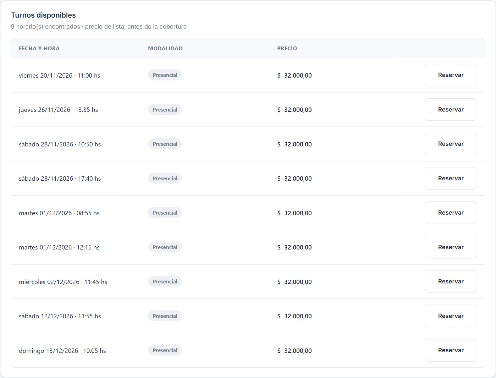
Juan buscó a la Dra. Ana López: cada horario libre aparece con su modalidad y su precio de lista.
Cuando encontrás uno que te sirve, tocá Reservar. En ese momento el horario queda retenido a tu nombre durante cinco minutos: nadie más lo puede tomar mientras decidís. Arriba de todo aparece un recuadro naranja, “Turno reservado temporalmente”, que te dice hasta qué hora lo tenés retenido y te muestra dos cosas:
- Cobertura: MediConecta le preguntó a tu obra social, en ese mismo momento, si te cubre la consulta. Ves si quedó “Cubierta”, “Particular” (no tenés obra social o no te cubre) o “Pendiente” (tu obra social no respondió; más abajo te contamos qué pasa).
- Liquidación: el precio de la consulta, cuánto paga tu obra social y cuánto te toca a vos. Por ejemplo, OSDE cubre el 70 % y vos abonás el 30 % como copago.
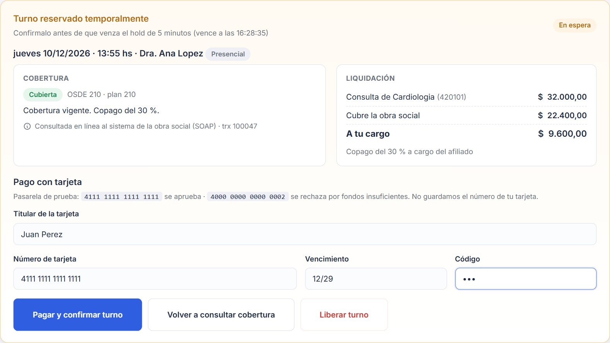
Juan reservó una consulta de cardiología: OSDE la cubre y a él le quedan $ 9.600 de copago, que paga con tarjeta.
Si te toca pagar algo, completá los datos de la tarjeta (titular, número, vencimiento y código) y tocá Pagar y confirmar turno. Si no tenés nada a cargo (por ejemplo, tu obra social te cubre el 100 %), el botón dice simplemente Confirmar turno. Vas a ver un cartel con la fecha confirmada y lo que se cobró, y el turno pasa a la tabla “Mis turnos”. Listo: el profesional ya se enteró, sin que tengas que hacer nada más.
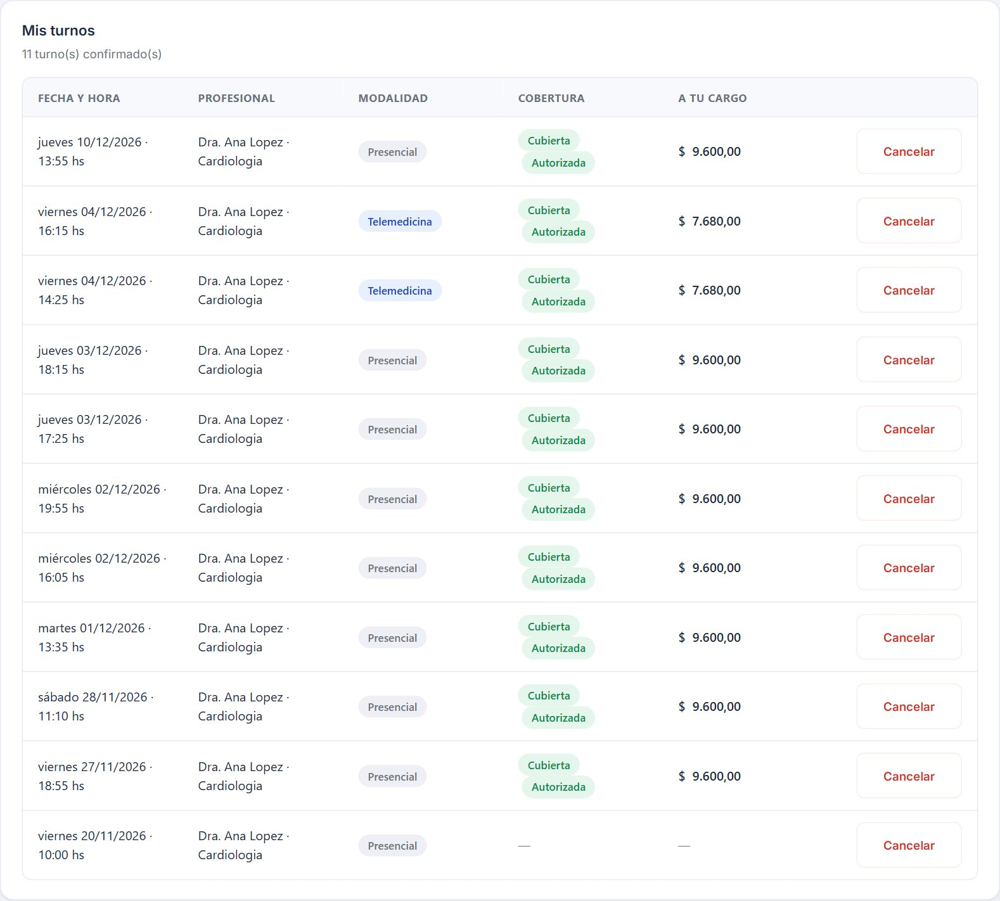
“Mis turnos” con la modalidad, la cobertura, el estado de la autorización y lo que pagaste.
Si tenés obra social, después de confirmar MediConecta le pide a tu obra social que autorice la prestación. Ese trámite no te hace esperar: en “Mis turnos” ves “Autorización en trámite” y, cuando la obra social responde, cambia a “Autorizada” y te llega una notificación.
Tus datos de pago.MediConecta no guarda el número de tu tarjeta: se lo pasa a la pasarela de pagos y lo descarta. Sólo queda registrada la marca y los últimos cuatro dígitos. Si querés liberar el turno sin confirmarlo, tocá Liberar turno.
Ojo con los cinco minutos.Si reservás y no confirmás a tiempo, el horario se libera solo y vuelve a la lista para cualquier paciente. No pasa nada malo: si todavía está libre, lo podés reservar de nuevo.
Cancelar un turno
En “Mis turnos” cada turno confirmado tiene su botón Cancelar. Al tocarlo, el turno desaparece de tu lista y el horario vuelve a quedar disponible para que lo tome otro paciente. Al profesional le llega un aviso de que cancelaste. Si habías pagado, el reintegro se procesa solo en unos segundos y lo ves en Pagos como “Reembolsado”.
Si lo que querés es cambiar el día, por ahora no hay un botón para reprogramar: cancelá el turno y reservá uno nuevo.
Tu historia clínica
En Historia Clínica ves todo lo que tus profesionales cargaron sobre vos: diagnósticos y recetas, ordenados del más nuevo al más viejo, con la fecha y el nombre de quien te atendió. Es de solo lectura: no podés editarla vos, y ningún otro paciente puede verla.
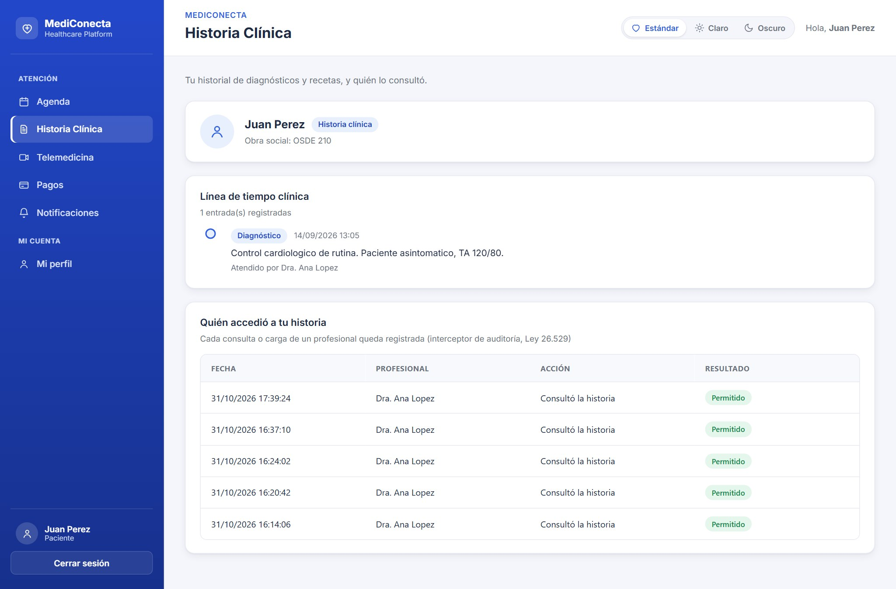
La historia de Juan, con el diagnóstico que cargó la Dra. López en su control.
Al final de tu historia está el recuadro Quién accedió a tu historia: cada vez que un profesional la consulta o le agrega una entrada, queda registrado con su nombre, la fecha y la hora. Sólo pueden verla los profesionales con los que tenés un turno confirmado.
Capítulo 4
Si sos profesional
Publicar tus horarios y llevar la historia clínica de tus pacientes.
Publicar tus horarios
Cuando entrás, la Agenda te muestra dos recuadros. En “Publicar disponibilidad” escribí el día y la hora en el formato dd/mm/aaaa hh:mm, por ejemplo 20/11/2026 10:00, elegí la modalidad (presencial o telemedicina) y tocá Publicar. Ese horario aparece enseguida en la lista de los pacientes que te busquen. En “Turnos confirmados” ves los turnos que ya te reservaron, con el paciente, la modalidad, la cobertura y el estado de la autorización de la obra social.
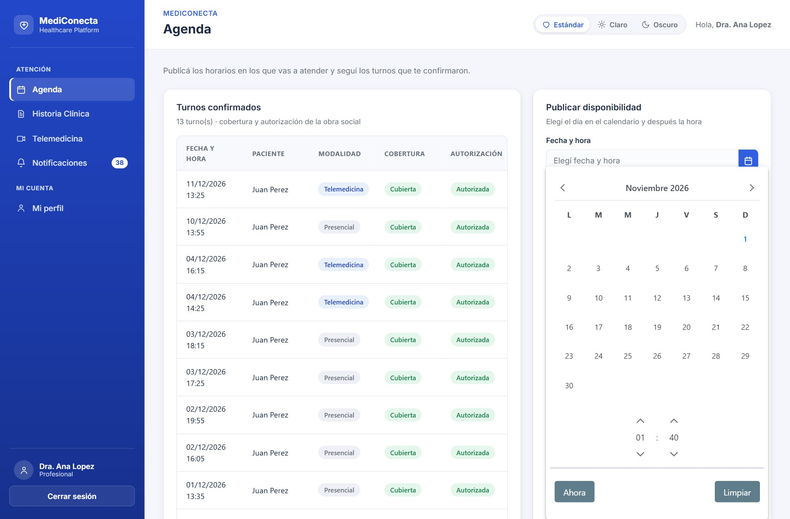
La agenda del lado del profesional: los turnos que le confirmaron y el formulario para publicar.
Cada horario se publica de a uno, y tiene que ser una fecha futura. Si atendés toda una mañana cada media hora, vas a tener que cargarlos uno por uno; es algo que queremos mejorar.
Cargar diagnósticos y recetas
Entrá a Historia Clínica. Arriba, en “Seleccionar paciente”, aparecen los pacientes que tienen un turno confirmado con vos, con la fecha del turno. Elegí uno y tocá Ver historia.
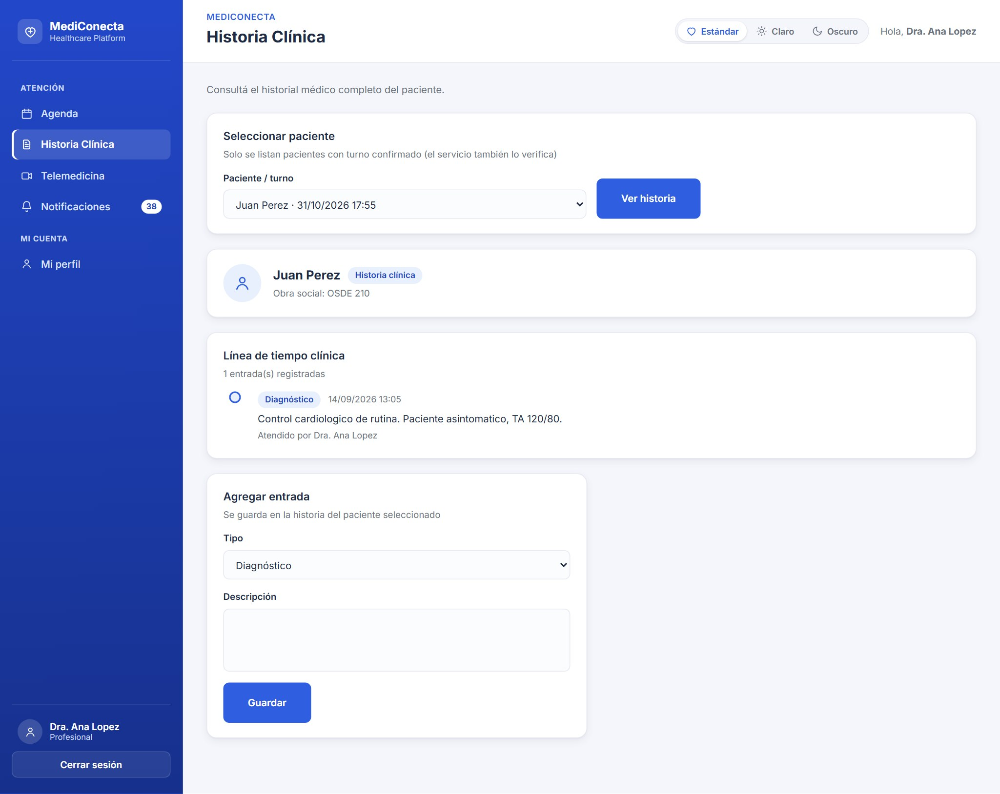
La Dra. López abrió la historia de Juan: arriba sus datos, en el medio la línea de tiempo y abajo el formulario para agregar.
- Revisá la línea de tiempo clínica: cada entrada tiene su tipo (diagnóstico o receta), la fecha y quién la cargó.
- Más abajo, en “Agregar entrada”, elegí si es un Diagnóstico o una Receta.
- Escribí la descripción con el detalle que necesites: lo que vos mismo querrías leer en el próximo control.
- Tocá Guardar. La entrada aparece primera en la línea de tiempo, firmada con tu nombre, y el paciente ya la puede ver desde su cuenta.
Ojo.Las entradas no se pueden editar ni borrar una vez guardadas, igual que en una historia clínica en papel. Revisá el texto antes de tocar Guardar.
Capítulo 5
Teleconsultas
La consulta por video, sin salir de casa.
Los turnos de modalidad Telemedicina se reservan y se pagan igual que los presenciales (y son un poco más baratos). Una vez confirmados, aparecen en la sección Telemedicina de los dos: del paciente y del profesional.
- El día de la consulta, el profesional entra a Telemedicina y toca Iniciar videoconsulta. MediConecta crea la sala en el servicio de videoconsulta y le muestra el botón Entrar a la sala.
- El paciente, en su pantalla de Telemedicina, ve que la sala está abierta y toca Unirme a la consulta. Si todavía dice “Esperando que el profesional abra la sala”, no hace falta recargar: se actualiza sola.
- La sala se abre en una pestaña nueva. Cada uno puede activar su cámara.
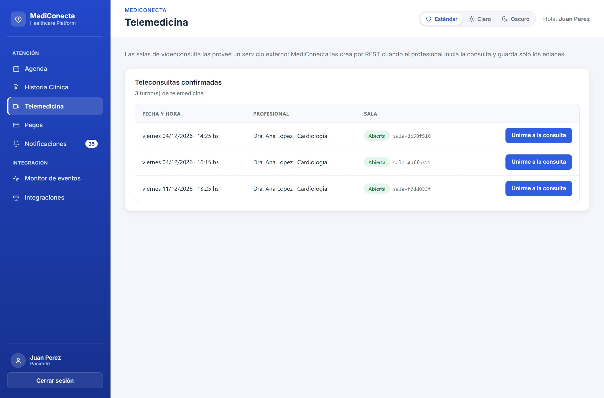
La pantalla de Juan cuando la Dra. López ya abrió la sala.
Capítulo 6
Pagos, reintegros y facturación
Todo lo que se cobró, se devolvió o se le reclama a una obra social.
Si sos paciente, en Pagos ves cada pago que hiciste: la fecha, el turno, el importe, la tarjeta (sólo la marca y los últimos cuatro dígitos) y su estado. “Aprobado” es un pago vigente; “Reembolsado” es un pago que se te devolvió, porque cancelaste el turno o porque la confirmación no se completó. En ese segundo caso el turno no se confirma y el dinero vuelve solo: no tenés que reclamar nada.
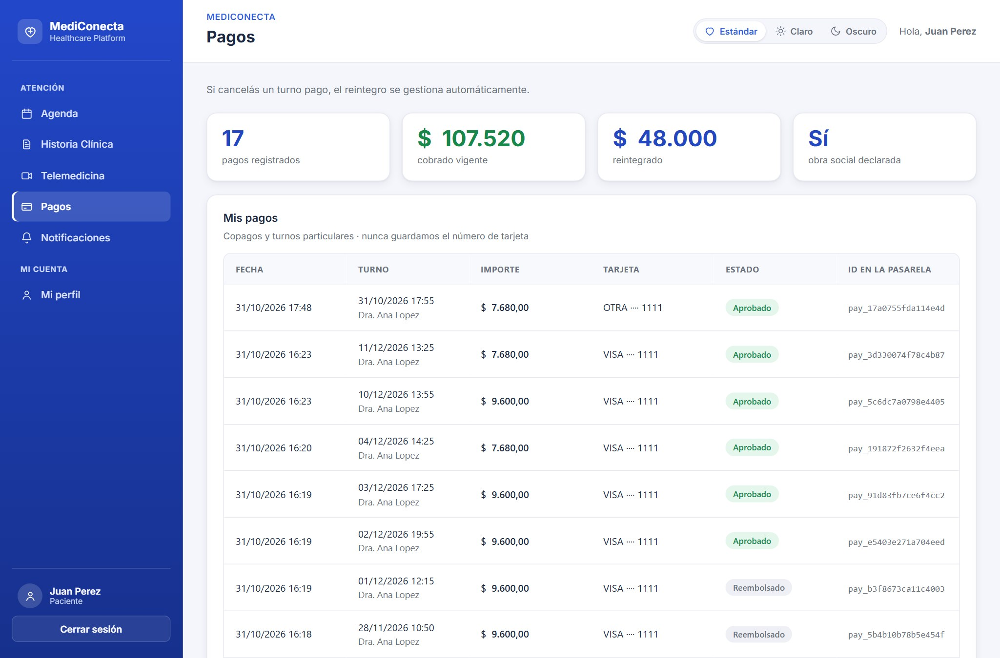
Los pagos de Juan: copagos aprobados y uno reembolsado por una cancelación.
Si sos profesional, en Pagos ves los cobros a tus pacientes y, más abajo, los reclamos a obras sociales: cada vez que una obra social autoriza un turno tuyo, MediConecta genera el reclamo por la parte que le corresponde pagar, con el código de autorización. Si el paciente cancela, el reclamo pasa a “Anulado”.
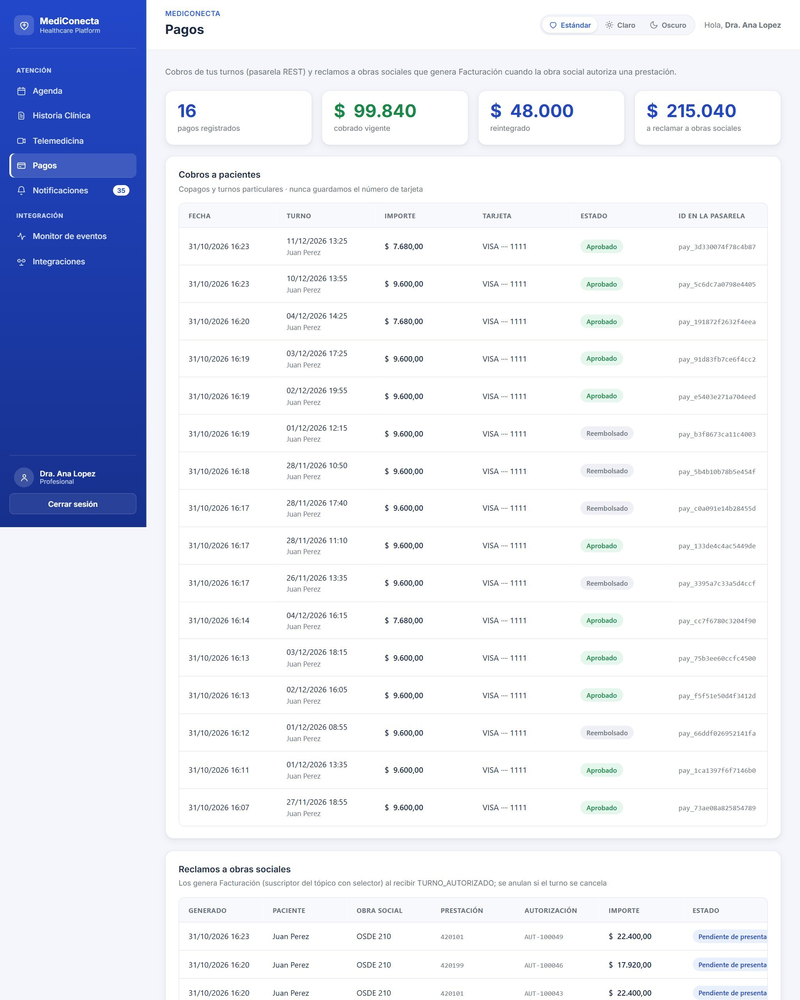
Lo que ve la Dra. López: sus cobros, lo que le van a pagar las obras sociales y los reclamos generados.
Capítulo 7
Tus avisos: notificaciones, monitor e integraciones
Cómo te enterás de lo que pasa con tus turnos, sin tener que estar recargando la página.
Notificaciones
Cada vez que un turno se confirma, se cancela o la obra social responde la autorización, MediConecta les avisa a las dos partes. Al paciente le arma un aviso por email y al profesional le deja un aviso dentro de la aplicación. Los dos aparecen en Notificaciones, con el número de avisos sin leer al lado del menú.
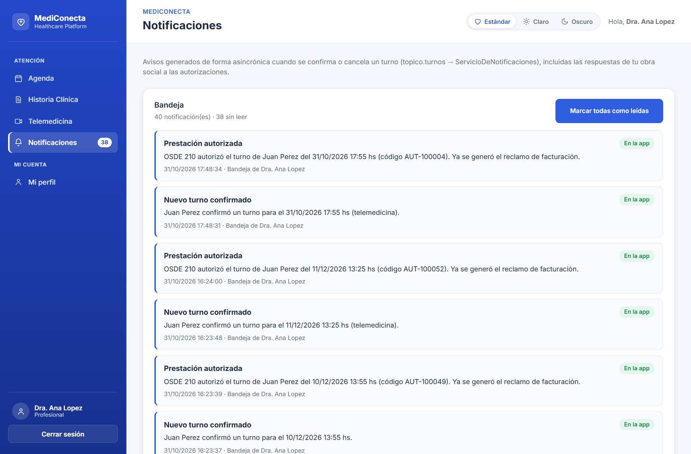
La bandeja de la Dra. López después de que Juan confirmó su turno. El aviso nuevo está marcado con una línea azul.
No hace falta recargar: la bandeja se actualiza sola cada pocos segundos. Cuando ya los leíste, tocá Marcar todas como leídas y el número del menú desaparece.
Sobre el email.En esta versión el correo todavía no sale a tu casilla: el aviso queda registrado y lo ves en la bandeja con la etiqueta “Email”. Conectar el envío real es uno de los próximos pasos.
Monitor de eventos
El Monitor de eventos es la pantalla más técnica de la aplicación, pero vale la pena conocerla. Cada vez que algo pasa con uno de tus turnos, el sistema genera un “evento” que procesan tres servicios por separado: el que arma las notificaciones, el que deja registro de cada cambio (la auditoría) y el de facturación. El monitor te muestra, para cada evento, si cada servicio ya lo procesó y cuánto tardó, en milisegundos. Facturación sólo se ocupa de las autorizaciones y las cancelaciones; en el resto de los eventos dice “no aplica”.
Más abajo está la cola de autorizaciones: cada pedido de autorización que se le hizo a tu obra social, si sigue “En cola” o ya fue “Autorizada” o “Rechazada”, con el código que dio la obra social.
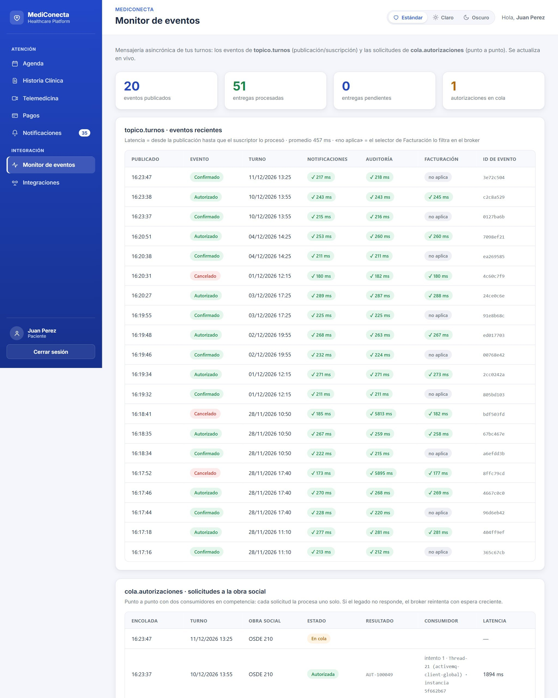
Los eventos de los turnos de Juan, procesados por los tres servicios, y la cola de autorizaciones.
Lo normal es ver todo en verde, con un tilde y unos pocos cientos de milisegundos. Si alguno dice Pendiente o “En cola”, significa que ese servicio, o la obra social, todavía no lo procesó, por ejemplo porque está detenido. El aviso no se pierde: queda guardado, el sistema lo vuelve a intentar solo y en cuanto se procesa el monitor pasa a verde. Solo ves los eventos de tus propios turnos.
Panel de integraciones
El panel de Integraciones muestra la conexión con los tres servicios externos: la obra social, la pasarela de pagos y el servicio de videoconsulta. Para cada uno indica si está respondiendo bien (“CERRADO”) o si dejó de responder y MediConecta suspendió las llamadas por unos segundos para no trabarse esperando (“ABIERTO”). Abajo hay una lista de las últimas consultas a esos servicios. Es la pantalla que usamos en la demostración del trabajo práctico, por eso incluye también un botón para simular una falla.

La conexión con la obra social suspendida (ABIERTO) mientras su sistema no responde.
Capítulo 8
Elegir cómo se ve: los tres temas
Estándar, claro u oscuro, y el cambio es instantáneo.
Arriba a la derecha de todas las pantallas (y en la de inicio) está el selector de tema. Tocá Estándar para la apariencia habitual de MediConecta, con el menú azul; Claro para una versión toda en blanco, con más contraste; u Oscuro para usarla de noche o con poca luz. El cambio es inmediato: no se recarga la página ni perdés lo que estabas haciendo, y la aplicación lo recuerda la próxima vez que entres desde ese navegador.
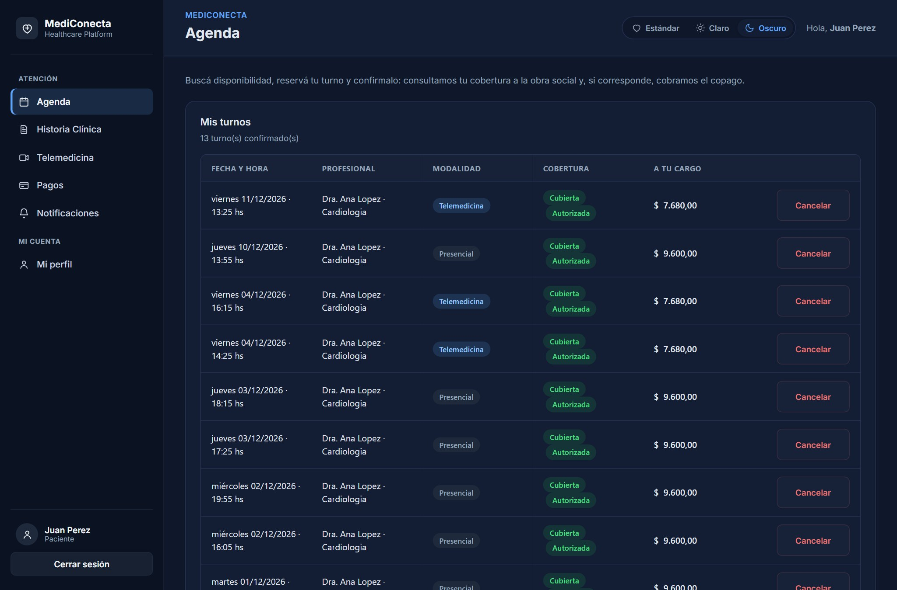
El Monitor de eventos con el tema oscuro.
Capítulo 9
¿Qué hago si…?
Las situaciones que más se repiten, con su solución.
…busco a un profesional y no me aparece ningún horario?
Ese profesional no tiene horarios libres a futuro. Probá con otro de la misma especialidad o volvé a mirar más tarde: los horarios aparecen apenas el profesional los publica.
…reservé un turno y desapareció el recuadro naranja?
Pasaron los cinco minutos sin que lo confirmaras y el horario se liberó. Si sigue en la lista, reservalo de nuevo y confirmalo enseguida.
…me rechazaron el pago?
El cartel te dice el motivo (por ejemplo, fondos insuficientes). Tu turno sigue reservado mientras no venzan los cinco minutos: probá con otra tarjeta y volvé a tocar Pagar y confirmar turno.
…dice que mi cobertura está “Pendiente”?
Tu obra social no respondió a tiempo. Podés confirmar igual: no se te cobra nada en ese momento y MediConecta le vuelve a preguntar a tu obra social apenas responda. Te llega una notificación con el resultado. Si la obra social no autoriza la prestación, la diferencia se abona en el consultorio.
…apareció un cartel de que “se revirtió” la confirmación?
Hubo un problema al confirmar y la operación se deshizo por completo: el turno no se confirmó y, si ya se había cobrado, el importe se reintegró automáticamente (lo ves en Pagos como “Reembolsado”). Tu turno sigue en espera: volvé a intentarlo.
…me dice “Credenciales inválidas”?
El email o la contraseña no coinciden. Revisá que el email esté bien escrito y que no tengas activadas las mayúsculas. Todavía no hay una opción para recuperar la contraseña.
…quiero cambiar el día de mi turno?
Cancelá el turno que tenés en “Mis turnos” y reservá uno nuevo. El horario que liberaste queda disponible para otro paciente.
…soy profesional y no encuentro a un paciente en Historia Clínica?
Solo aparecen los pacientes que tienen un turno confirmado con vos. Si el paciente canceló, o todavía no confirmó, no figura en la lista.
…la notificación no llega?
Esperá unos segundos: la bandeja se actualiza sola. Si querés saber qué pasó, mirá el Monitor de eventos. Si el servicio de notificaciones aparece como “Pendiente”, el aviso está en camino y va a llegar apenas se procese.
…me manda a la pantalla de inicio cuando quiero entrar a una sección?
Tu sesión se cerró, por ejemplo porque pasó mucho tiempo sin actividad. Volvé a entrar con tu email y tu contraseña.
Palabras que vas a ver
| Turno disponible | Un horario que publicó un profesional y que nadie reservó todavía. |
| Reserva temporal (“En espera”) | Un turno retenido a tu nombre durante cinco minutos mientras decidís si lo confirmás. |
| Turno confirmado | Un turno que ya es tuyo. Lo ves en “Mis turnos” y el profesional ya recibió el aviso. |
| Entrada clínica | Cada diagnóstico o receta que un profesional carga en tu historia clínica. |
| Evento | El registro que genera el sistema cada vez que un turno se confirma o se cancela. A partir de él se arman los avisos. |
| Latencia | Cuánto tardó un servicio en procesar un evento, desde que se generó. Se mide en milisegundos (mil milisegundos son un segundo). |
| Cobertura | Lo que tu obra social paga de una consulta. MediConecta se la consulta en el momento de reservar. |
| Copago | La parte de la consulta que pagás vos aunque tengas obra social (un porcentaje o un monto fijo, según tu plan). |
| Autorización | El permiso que da tu obra social para una prestación. Se pide solo después de confirmar y no te hace esperar. |
| Reintegro (reembolso) | La devolución de un pago a tu tarjeta, por una cancelación o porque la confirmación no se completó. |
| Teleconsulta | Un turno de modalidad telemedicina: la consulta se hace por video. |
Capítulo 10
Lo que todavía no hace
Para que no busques algo que no está.
MediConecta está en desarrollo, y preferimos decirte de entrada qué falta. Los avisos por email todavía no salen a tu casilla (los ves en la bandeja). La obra social, la pasarela de pagos y el servicio de videoconsulta con los que se conecta esta versión son de prueba: no se cobra dinero real ni se usa una obra social real.
Faltan además algunas comodidades que ya tenemos anotadas: reprogramar un turno sin cancelarlo, recuperar la contraseña por email, publicar varios horarios de una vez y un perfil para el administrador de la clínica.
Si encontrás algo que no funciona como dice este manual, o se te ocurre algo que te gustaría que haga, avisanos: este manual se actualiza junto con la aplicación.